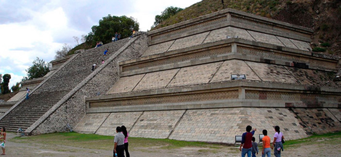
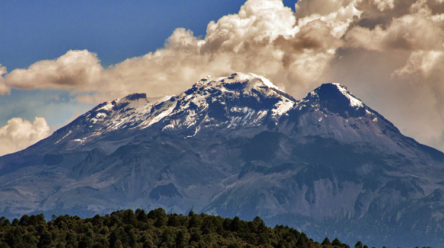

PUEBLA
Puebla es un estado en las alturas de la zona sur central de México. Su capital, también llamada Puebla, es conocida por ser la cuna de la salsa mole poblano a base de chocolate, una especialidad de la región. El centro histórico de Puebla se destaca por su arquitectura colonial española, que incluye la gran Catedral de Puebla. En los alrededores occidentales de la ciudad, está la ciudad de Cholula, conocida por su Gran Pirámide, una de las más grandes del mundo.

Andrea: Sobre la Gran Pirámide de Cholula, la Iglesia de Nuestra Señora de los Remedios, de color ocre, tiene vista a dos volcanes. En la Reserva de la Biosfera Tehuacán-Cuicatlán, en el sur del estado, los jardines botánicos de Zapotitlán Salina albergan más de cincuenta especies de cactus. En el norte, Zacatlán tiene tradiciones de cultivo de manzanas y relojería, que se pueden apreciar en los huertos y un museo de relojes, respectivamente. Cuetzalan del Progreso, de la época colonial, y sus villas circundantes se ubican entre bosques montañosos con cascadas y cuevas. Los azulejos Talavera pintados que adornan cientos de edificios de Puebla se producen en la ciudad y se venden en numerosas tiendas.
La Gran Pirámide de Cholula o Tlachihualtépetl es el basamento piramidal más grande del mundo con 400 metros por lado. Es el sitio arqueológico más grande de una pirámide en el Nuevo Mundo, así como la pirámide más grande que existe en el mundo hoy en día.
El Citlaltépetl, más conocido como Pico de Orizaba y que los náhuatl-hablantes de la región llaman Iztactépetl, es un volcán inactivo, ubicado en los límites territoriales de los estados mexicanos de Puebla y Veracruz.
El Iztaccíhuatl es un volcán Posiblemente activo ubicado en el centro de México. Es la tercera montaña más alta del país, después del Pico de Orizaba y el Popocatépetl. Se localiza en los límites territoriales de los estados de México y Puebla.
El Museo Amparo, ubicado en el Centro Histórico de Puebla de Zaragoza, es un espacio cultural contemporáneo creado en memoria de Amparo Rugarcía de Espinosa, esposa del banquero y filántropo mexicano Manuel Espinosa Yglesias, a través de la Fundación Amparo por iniciativa de su hija Ángeles Espinosa Yglesias.
Africam Safari es un parque de conservación de vida silvestre mexicano ubicado a 16.5 km de la ciudad de Puebla, donde los animales deambulan en libertad controlada y en cautiverio. Está acreditado por la Association of Zoos and Aquariums y por la World Association of Zoos and Aquariums.